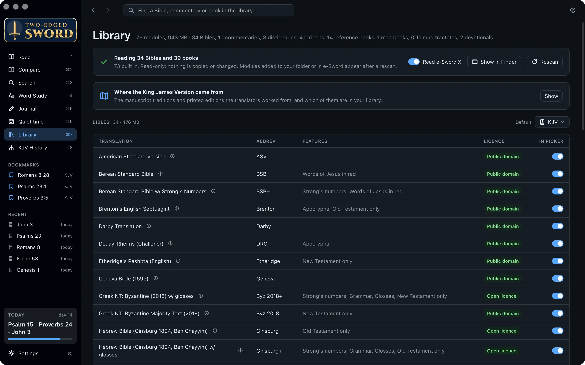
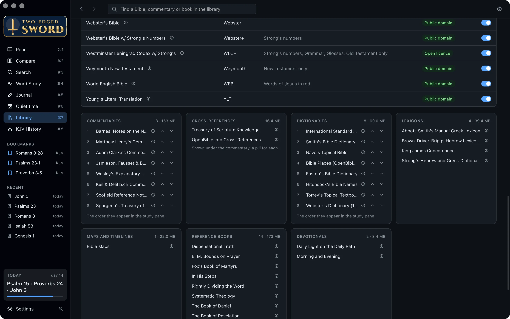
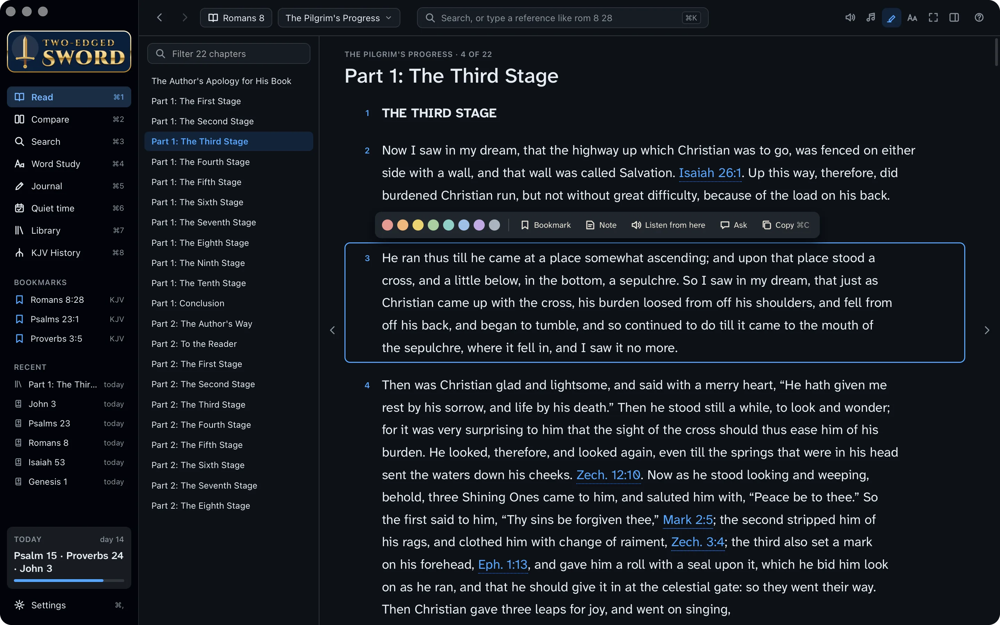
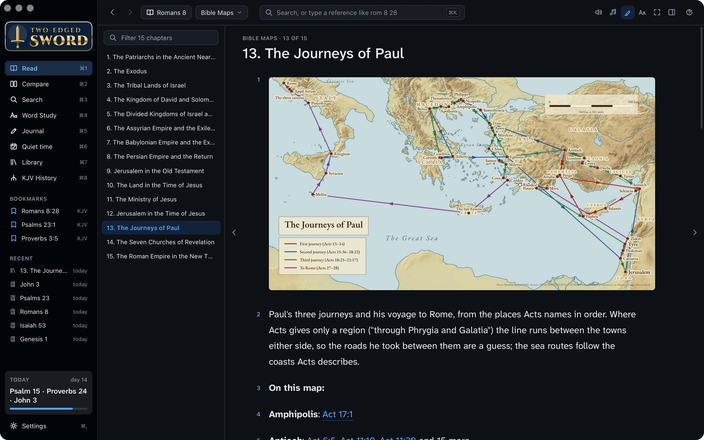
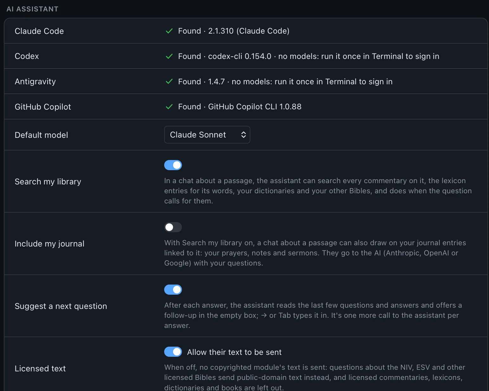
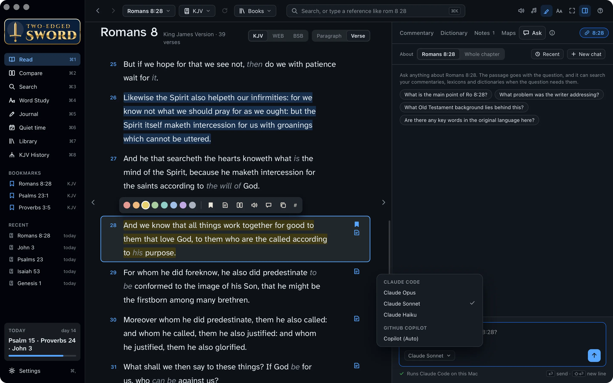
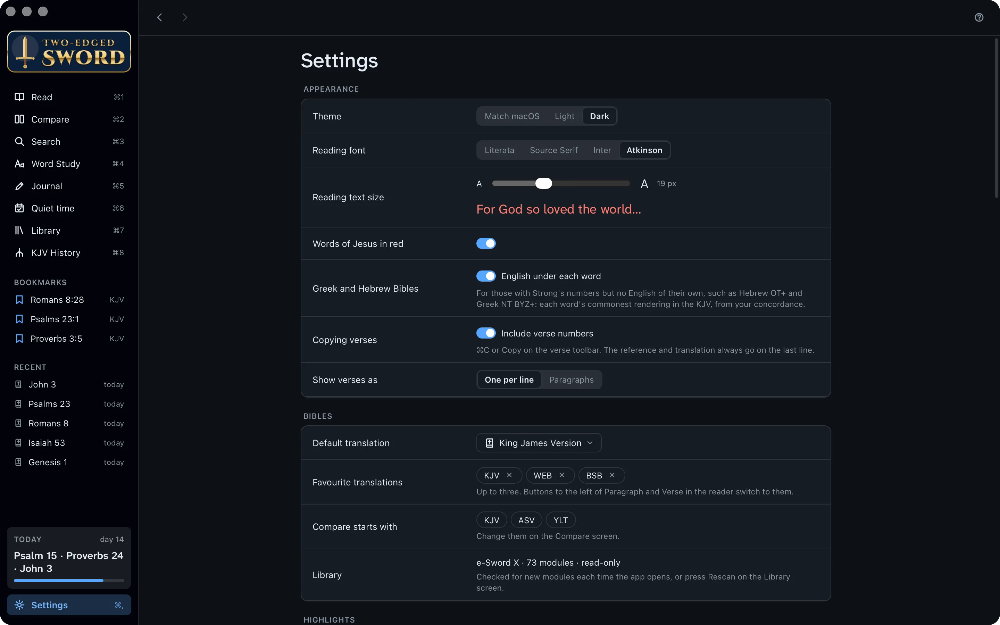

Tutorials › Your library
Make it
your own.
Bring your whole library in, open the classics with their charts and maps, set up the assistant with your own account, and make the app feel like home.
Howbeit when he, the Spirit of truth, is come, he will guide you into all truth.John 16:13
I'm using a
The steps and keys below follow your choice.
The story
You've studied with e‑Sword for years, and a friend from the Thursday group has recommended a few more modules. Now you want your whole library in one place: the Bibles, the commentaries, and the old books that have helped you most.
Many of them were written by saints who wanted one thing: to point their readers to Jesus Christ, the Lord and Saviour. This tutorial gathers them together, and sets up the assistant to read them with you. The books are helpers; the Holy Spirit is the one who guides us into all truth.
- Your modulesbeside the built-in ones
- Commentariesin the order you like
- The classicswith their charts and maps
- The assistanton your own account
Open the Library.
Before adding anything, see what you already have. The app comes with over seventy modules: Bibles, commentaries, dictionaries, lexicons, books and devotionals, all free to use.
- Press ⌘7, or click Library in the sidebar.
- Each Bible is listed with its features, such as Strong's numbers or the words of Jesus in red, and its licence.
- Click the ⓘ beside a module for its description and where it came from.
- In picker chooses which Bibles are in the Bible menu. Turn off the ones you never read.
- Looking for something? Type in the box at the top, such as Strong, to list only what matches.

Nothing is changed. The app reads your modules where they are. It never copies or changes them, and your highlights and journal are kept separately.
Order your commentaries.
Everyone has a commentator they reach for first. Put yours at the top, and the study pane opens on him.
- In the Library, scroll down to Commentaries.
- Use the up and down arrows beside a commentary to move it. The first in the list comes first in the study pane.
- Do the same with Dictionaries, for the Dictionary tab.
- Up in Bibles, Default sets the Bible the app opens with.

Add modules.
The app reads e‑Sword X's Mac formats, so modules made for it work here too. e‑Sword's modules may not be shared, so download your own copy of each one your friend recommended.
- Open e‑Sword X and download the modules your friend recommended from its Download window. With Read e‑Sword X on (step 4), they appear here by themselves, so you can skip the rest of this step. For a module you've downloaded as a file from elsewhere, carry on.
- Download the Mac versions of the modules your friend recommended: the files listed below. e‑Sword for Windows' own modules won't open in this app, even on Windows.
- In the Library, click Show in FinderFile Explorer. Your modules folder opens.
- Copy the module files into it: not into a folder inside it. These are the kinds it reads:
.bbli Bibles .cmti commentaries .dcti dictionaries .lexi lexicons .refi books .devi devotionals
- Back in the Library, click Rescan. The new modules appear in the Library and the menus.
Honour the publishers. Download modules yourself, from e‑Sword or the sites in step 5, rather than copying someone else's: they may not be passed on. The workman is worthy of his hire (1 Timothy 5:18).
e‑Sword's library.
If you have e‑Sword X on your Mac, there's nothing to copy. The app reads its library as it is.
- On first launch, macOS asks whether the app may access data from other apps. Allow it.
- In the Library, keep Read e‑Sword X on. Modules you download in e‑Sword X's Download window appear here too.
- Where you have the same module twice, In e‑Sword X too lists them and which copy is read. The app's own copy is the default.
e‑Sword for Windows keeps its modules' text encrypted, so the app can't read them (files such as .bblx).
- Use the Mac versions of the same modules instead: the formats in step 3.
- Copy them into your modules folder and click Rescan, as before.
With thanks. Rick Meyers' free e‑Sword has put God's word into the hands of millions since 2000. This app reads its formats, and owes that to his work.
Find more.
There are many good books on the Scriptures, free to read. The guide lists some of the best.
- Read Free modules worth having: Greek and Hebrew Bibles with Strong's numbers, commentaries such as Vincent's Word Studies, and books such as Edersheim and Spurgeon's sermons.
- Some texts aren't e‑Sword downloads: the Babylonian Talmud, Beza's Greek New Testament of 1598 and others. Building modules says how to make them from free sources.
- Put a module you've built into your modules folder, and click Rescan.
Where to download more
- BibleSupport has thousands of free modules made by e‑Sword's users: Bibles, commentaries, dictionaries and books.
- eStudySource sells high-quality modules of copyrighted works, such as modern translations and commentaries, licensed from their publishers.
On Windows, choose the Mac downloads. Both sites offer modules for e‑Sword on Windows and for e‑Sword X on a Mac. Download the e‑Sword X (Mac) files, such as .bbli and .cmti: the Windows ones won't open in this app.
Read the classics.
In The Pilgrim's Progress, Christian runs up the highway called Salvation until he comes to a cross, and his burden falls from his back. Bunyan's whole book points to that place.
- In Read, click Books, beside the Bible menu, and choose The Pilgrim's Progress.
- The chapters are down the side. Click Part 1: The Third Stage.
- Click a paragraph. It works just like a verse: highlight it, bookmark it, add a note, listen from there, ask about it or copy it.
- Click a Bible reference in the book to open it; point at one to read it.

Devotionals, such as Spurgeon's Morning and Evening, open on today's reading.
Charts and maps.
Clarence Larkin drew great charts of God's plan through the ages. His chart of the King follows Christ from “In the beginning was the Word” to the kingdom delivered up to God.
A chart
- From Books, open Dispensational Truth at 12. The King.
- Click the chart to enlarge it. Scroll, or use two fingers on a trackpad, to zoom; drag to move it.
- Double-click to fit it again, ← and → go to the chapter's other pictures, and Esc closes it.
A map
- From Books, open Bible Maps: fifteen maps, from the patriarchs to the seven churches.
- Open 13. The Journeys of Paul, and follow the gospel from Jerusalem to Rome.
- Click a place's dot or name for a card of its verses. Point at a verse to read it; click it to open it.

Maps beside the Bible. In Read, the study pane's Maps tab picks the maps that suit the book you're in.
Set up the assistant.
Ask answers your questions from your own commentaries and dictionaries, naming its sources. It runs an AI tool you install and sign in to with your own account: Claude Code, Codex, Antigravity or GitHub Copilot.
- Open Terminal and install one, such as Claude Code:
curl -fsSL https://claude.ai/install.sh | bash
- Sign in by running it once:
claudeFor Codex, install with
npm install -g @openai/codexand sign in withcodex login. For GitHub Copilot,npm install -g @github/copilot, then runcopilotand type/login. - Open Settings (⌘,). The app looks for the tool again, and Ask appears.
- Open PowerShell and install one, such as Claude Code:
irm https://claude.ai/install.ps1 | iex
- Sign in by running it once:
claudeFor Antigravity, install with
irm https://antigravity.google/cli/install.ps1 | iexand runagy. Codex and GitHub Copilot install withnpm install -g @openai/codexornpm install -g @github/copilot. - A terminal opened before the install may not find the tool: sign out of Windows and back in.
- Open Settings (Ctrl+,). The app looks for the tool again, and Ask appears.

Choose a model, and what's sent
- The menu under any Ask box chooses the model, such as Claude Sonnet or Opus. Your choice becomes the default.
- Your first question goes with what you're looking at, such as the passage. After that, only what the assistant chooses to read is sent.
- Turn off Licensed text and no copyrighted module's text is sent: a licensed Bible is swapped for a public-domain one, and licensed books are left out.
- Include my journal is off until you turn it on.

Read only. Each AI tool is allowed only to read and search. None of them can change your files, and your chats stay on your computer.
Make it yours.
You'll spend many hours here with God's word. Make the page easy on your eyes.
- Press ⌘, for Settings. Appearance is at the top.
- Choose the Theme (light, dark, or your computer's), a Reading font and the Reading text size.
- Words of Jesus in red shows the Lord's own words in red, in the Bibles that mark them.
- Show verses as one per line, or in paragraphs like a printed Bible.

Updates. The app checks for a new version once a day, says what's new, and asks before installing. To check now, choose Check for Updates… at the foot of Settings, or in the app menunotification-area menu.
Your library, at home.
Your modules sit beside the built-in ones, the classics are open, and the assistant reads them with you. Every one of these books is a servant of the Book, and of the Lord it reveals. Along the way, you learned to:
- Find your way around the Library
- Order commentaries and dictionaries
- Add modules and rescan
- Read e‑Sword's modules
- Read books and devotionals
- Zoom into charts and maps
- Set up Ask with your own account
- Make the app look the way you like